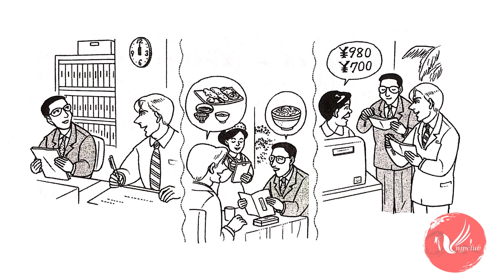

| 山田： |
もう 12時ですよ。昼ごはんを 食べに 行きませんか。 |
| ミラー： |
ええ。 |
| 山田： |
どこへ 行きますか。 |
| ミラー： |
そうですね。きょうは 日本料理が 食べたいですね。 |
| 山田： |
じゃ、「つるや」へ 行きましょう。 |
| ‐ ‐ ‐ ‐ ‐ ‐ ‐ ‐ ‐ ‐ ‐ ‐ ‐ ‐ ‐ ‐ | |
| 店の 人： |
ご注文は？ |
| ミラー： |
わたしは 天ぷら定食。 |
| 山田： |
わたしは 牛どん。 |
| 店の 人： |
天ぷら定食と 牛どんですね。少々 お待ち ください。 |
| ‐ ‐ ‐ ‐ ‐ ‐ ‐ ‐ ‐ ‐ ‐ ‐ ‐ ‐ ‐ ‐ | |
| 店の 人： |
1,680円で ございます。 |
| ミラー： |
すみません。別々に お願いします。 |
| 店の 人： |
はい、天ぷら定食は 980円で、牛どんは 700円です。 |